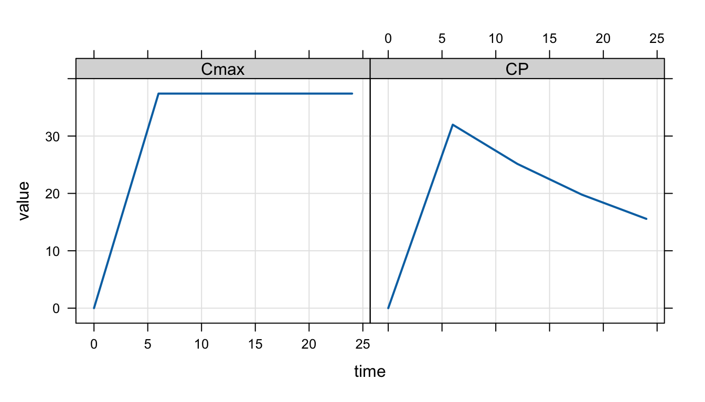

$PLUGIN autodec
$SET outvars = c("CP", "Cmax")
$CMT @number 2
$PARAM CL = 1, V = 25, KA = 2.5
$PK
if(NEWIND <= 1 || EVID==1 || EVID==4) {
Cmax = 0; // Track Cmax in $DES
}
$DES
CPode = A2/V;
if(CPode > Cmax) Cmax = CPode;
dxdt_A1 = -KA * A1;
dxdt_A2 = KA * A1 - CL * CPode;
$ERROR
CP = A2/V;
$CAPTURE Cmax CPIt’s a common practice to find a true maximum concentration after a dose (Cmax) through simulation from a PK model written using differential equations. In this post, we’ll show this implementation and note some important points to consider when using this method for an infusion. My thanks to Félicien Le Louedec for discussion of the issue and inspiration to create the post.
1 Implementation
The true Cmax approach involves the following steps:
- Initialize a variable (like
Cmax) to zero when starting on a new individual or with a subsequent dose within the same individual. - Calculate concentration in the
$DESblock (CPode) . - Update
Cmaxto the value ofCPodecalculated in$DESwheneverCPodeis greater than the current value ofCmax.
The code might look like this
I call this a “true” Cmax because the ODE solver will need to explore the shape of the concentration-time profile around Cmax in detail to understand when the concentration stops increasing and starts to decrease. And the solver will explore this part of the curve whether or not you ask for simulated output at the time of Cmax (Tmax) and you can get the true Cmax by logging the concentration at Tmax. If, instead, you simulated, say, every hour and then took the maximum CP over the dosing interval just from the output records, it will be an approximate Cmax since you likely didn’t ask for an output time exactly at Tmax.
2 Dose into extravascular compartment
After loading packages and our model, let’s calculate Cmax for an extravascular dose. We set the default output time step (delta) to 6 hours to reduce the resolution of the simulated output; this is pretty extreme, but I wanted to make the point that we’ll get poor approximation of Cmax if we only look at CP on output records. In other words, we have to use the ODE-derived Cmax to get a the true value back.
library(mrgsolve)
library(dplyr)
mod <- mread("true-cmax.mod", delta = 6) We’ll put 1000 mg into the depot compartment as a single dose.
dose <- ev(amt = 1000, cmt = 1)On simulation, we can check the maximum value of CP (calculated only at output records) and Cmax (calculated with the code in $DES).
out <- mrgsim(mod, dose)
plot(out, scales = "same")
And these are the results from the different approaches.
max(out$CP) # Concentration from output records[1] 31.97673max(out$Cmax) # Max concentration from $DES[1] 37.39886We see that
CPisn’t very accurate due to low-resolution output in the simulationCmaxis higher, reflecting the “true” Cmax
We can run this simulation with much smaller delta and with some more strict settings for the ODE solver.
out2 <- mrgsim(mod, dose, delta = 1e-3, rtol = 1e-12, hmax = 1e-3)
max(out2$CP) # Concentration from output records[1] 37.39889max(out2$Cmax) # Max concentration from $DES[1] 37.39889Here, we see good agreement with the approximated Cmax and the true Cmax.
But we don’t need to go to these lengths; we can get a good approximation of Cmax from CP just by reducing delta to a reasonably small value.
out3 <- mrgsim(mod, dose, delta = 0.1)
approx <- max(out3$CP)
approx[1] 37.39822true_bolus <- max(out2$Cmax)
100 * (approx - true_bolus) / true_bolus[1] -0.001783364But note this is likely problem-dependent: a smaller delta value may be required for a good approximation in problems with different absorption characteristics. But I find this approach works well for most situations.
3 Infusion dosing
Some care must be taken when utilizing the approach for doses that are administered by infusion into the central compartment. In this case, the true Cmax happens at the end of the infusion and mrgsolve creates a discontinuity in the simulation when the infusion is turned off. When the ODE solver runs into this discontinuity, it will “overshoot” the infusion end time and then get the right solution by interpolating back in time. This isn’t a bug in the solver; it’s a feature, enabling the ODE solver to more efficiently run through your simulation. The trouble is with the code we have in the model for tracking Cmax: the logged value will keep increasing during the overshoot period and we will have a higher than expected Cmax value at the end of the simulation. This part of the vignette will demonstrate this behavior and show you some ways to address it.
Let’s create a new event object infusing the dose into the central compartment.
dose <- ev(amt = 1000, rate = 149, cmt = 2)We expect the infusion to end at 6.711409 hours
#' This infusion ends at
end <- dose$amt / dose$rate
end[1] 6.711409and the “true” Cmax for the infusion is 35.08074
out <- mrgsim_df(mod, event = dose, end = -1, add = end, obsonly = TRUE)
select(out, time, CP) time CP
1 6.711409 35.08074true_infusion <- out$CPBut what happens when we assess Cmax with our code in $DES? We see that the reported Cmax is higher than the true Cmax.
out <- mrgsim(mod, event = dose)
max(out$Cmax) # Max concentration from $DES[1] 38.51896This happens because the ODE solver overshoots the end of the infusion and corrects this overshoot later; but our Cmax logging code can’t deal with the overshoot and retains the Cmax value that was falsely inflated during that overshoot.
We can verify this is what is happening by reducing hmax, the maximum step size. When hmax is smaller, the ODE solver takes smaller steps, the overshoot won’t be as severe, and the simulated Cmax will be closer to the true value.
out <- mrgsim(mod, event = dose, hmax = 1e-3)
max(out$Cmax) # Max concentration from $DES[1] 35.08344Now, our Cmax is looking better. We can get even closer by lowering delta and rtol
out <- mrgsim(mod, event = dose, hmax = 1e-3, delta = 1e-4, rtol = 1e-12)
max(out$Cmax) # Max concentration from $DES[1] 35.08085Now, we’re getting much closer to the true Cmax value. Of course, there is a cost to this: all of these changes will cause the ODE solver to be less efficient and the simulation will take longer.
Here’s what happens with the reasonable approximation we used earlier.
out4 <- mrgsim(mod, event = dose, delta = 0.1)
max(out4$CP) # Concentration from output records[1] 35.02874The approximate Cmax is a little off the true, but still pretty reasonable.
approx <- max(out4$CP)
100 * (approx - true_infusion) / true_infusion[1] -0.14823493.1 Get Cmax from the end of the infusion
As an alternative, we can get Cmax as the predicted concentration exactly at the end of the infusion and it seems like this should be the gold standard for an infusion. It is possible to do this in mrgsolve right now, but I’m not going to publish it here since there is no public api for doing it. If you really need it, contact me and I’ll help you out. I’ll be working on public api for testing for end of infusion and update the vignette when that gets rolled out.
4 Special code needed when advancing system to steady state
Remember we had this code in $DES for keeping track of Cmax
$DES
CPode = A2/V;
if(CPode > Cmax) Cmax = CPode;When mrgsolve is advancing the system to steady state (with SS = 1 in the dosing record, it will call the $DES block over and over until it has determined a steady state has been reached. You probably don’t want or need to track Cmax while the system is advancing. You can update this code to prevent Cmax from getting updated using the SS_ADVANCE variable.
$DES
CPode = A2/V;
if(CPode > Cmax && !SS_ADVANCE) Cmax = CPode;
dxdt_A1 = -KA * A1;
dxdt_A2 = KA * A1 - CL * CPode;This says to only update Cmax if the system is not in the process of advancing to steady state.